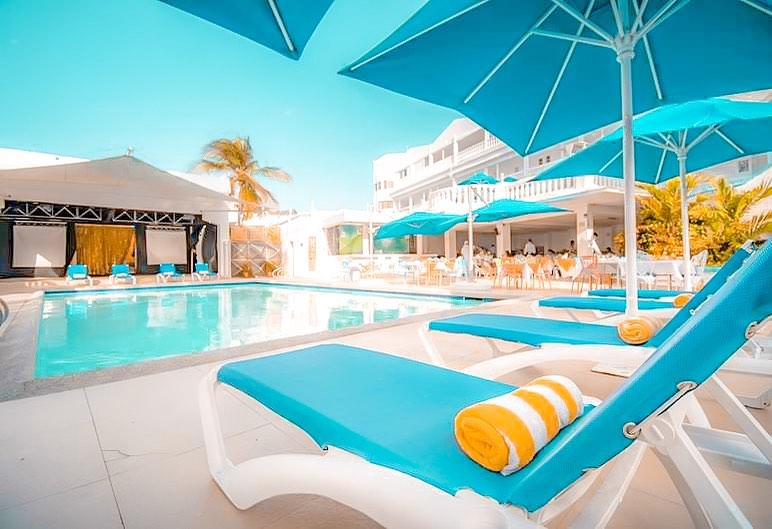

Decameron Isleño
Situado a tan solo unos pasos del aeropuerto y frente a la
más hermosa playa sanandresana -Spratt Bight-, el Decameron
Isleño le asegura una auténtica experiencia en la paradisíaca
isla colombiana. Un rincón predilecto por turistas para disfrutar
del sol y la transparencia multicolor de sus aguas.
El resort ha sido galardonado con la 'Certificación de Excelencia'
por la red especializada en viajes y turismo Trip Advisor, gracias
a su servicio 'Todo Incluido', así como su diseño y privilegiada ubicación. Se encuentra a tan solo 5 minutos del aeropuerto y lo rodea la zona de mayor auge comercial, turístico y hotelero de San Andrés, el North End.
Desde allí podrá interactuar con los habitantes de la pintoresca
isla, una mezcla centenaria de inmigrantes puritanos ingleses,
colonos holandeses, españoles, esclavos, piratas y árabes que
llegaron a partir de 1953, cuando este lugar se declaró puerto
libre.

El Dorado San Andres
El Hotel El Dorado con más de 35 años de experiencia
hotelera, inspirado en la fantástica leyenda del Dorado,
hemos creado especialmente para usted este maravilloso
hotel, en el que la tradición, el buen diseño, el servicio
personalizado de gran calidad y la exclusividad, a tan solo
1 minuto a pie de la playa, dispone de piscina, restaurante,
conexión Wi-Fi gratuita y TV de pantalla plana. La playa de
Spratt Bight está a 300 metros.
Las habitaciones de El Dorado están decoradas con colores
vivos y cuentan aire acondicionado. Todas disponen de baño
privado y algunas tienen balcón con vistas a la piscina y/o
vista al mar.
Todos los días se sirve un desayuno buffet que incluye
frutas tropicales y zumos recién exprimidos. Hay un restaurante
que ofrece platos regionales e internacionales. Las bebidas del bar
se pueden disfrutar junto a la piscina.
Los huéspedes podrán relajarse en las tumbonas. Se ofrecen
espectáculos nocturnos con regularidad. También hay una sala
de juegos.